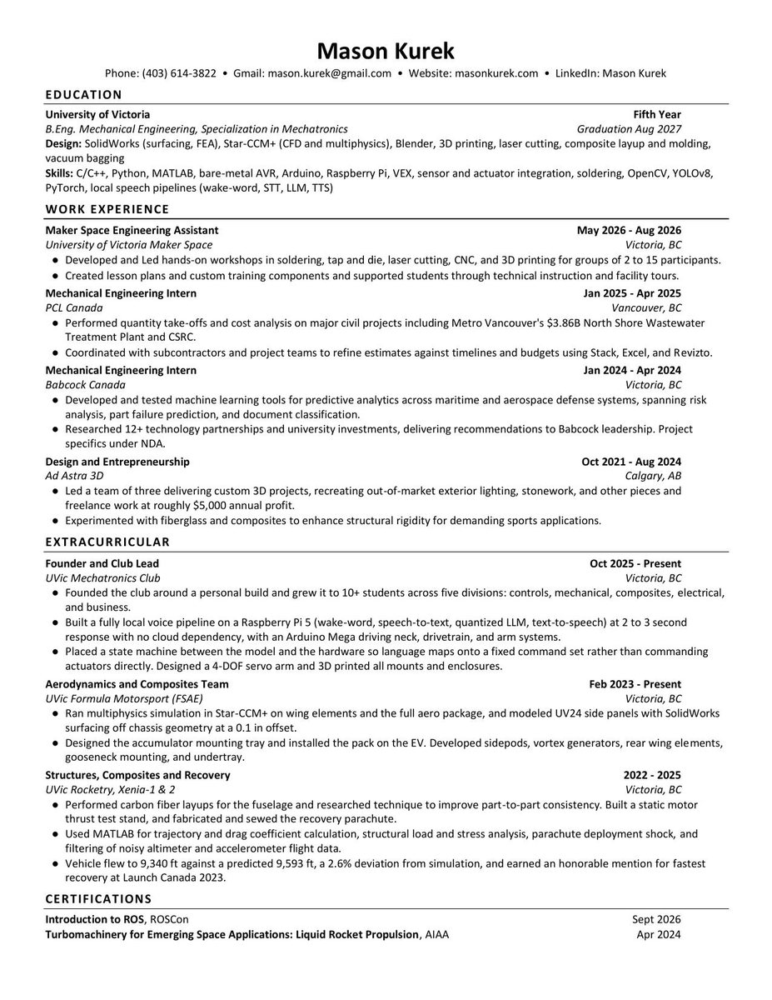
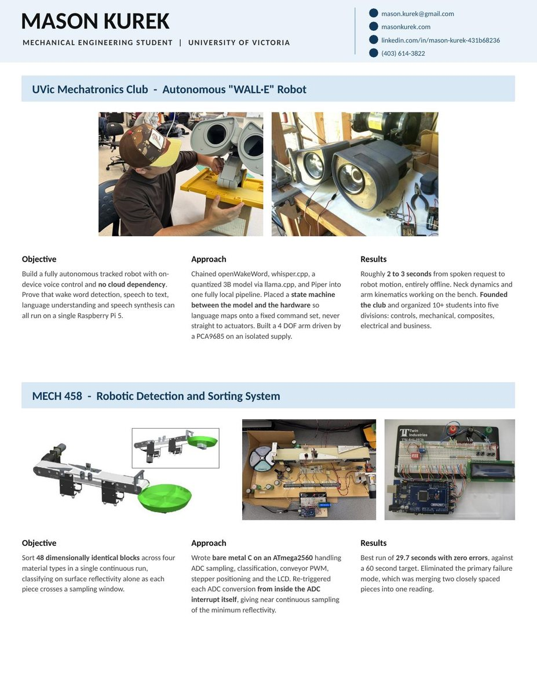
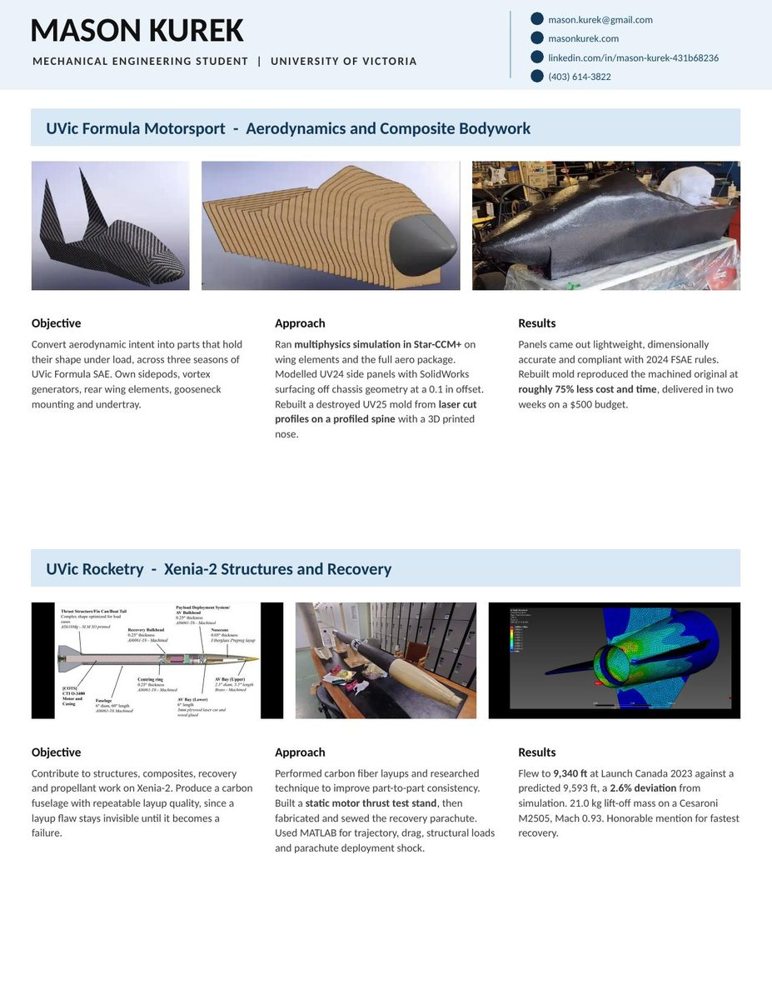
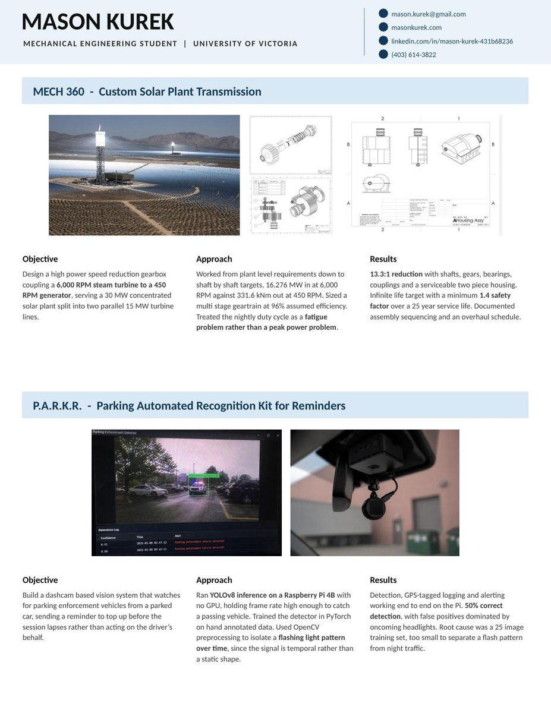

Resume
Resume
Download the current PDF, or read the full work history on the experience page.

resume/own-01.jpg
resume/own-02.jpg
resume/own-03.jpg
resume/own-04.jpg
Keeping this current: replace
assets/resume/Mason-Kurek-CV-and-Portfolio.pdf with your latest export, and drop new page previews into
assets/img/resume/.
Contact
Open to co-op and new-grad roles in robotics, aerospace, and advanced manufacturing.